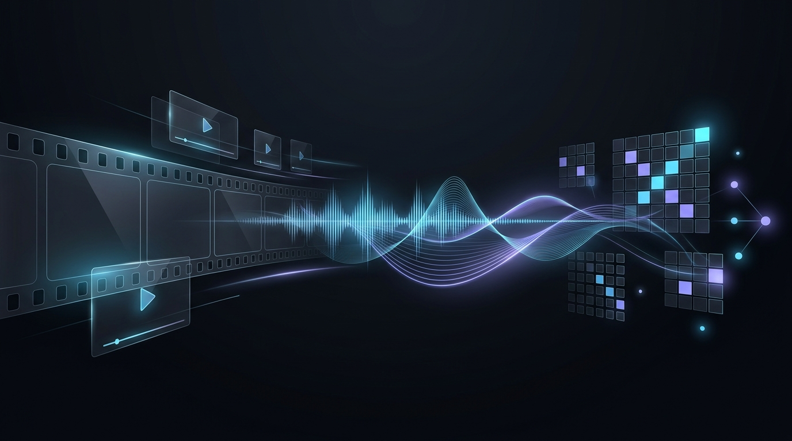

现代音视频生成完全指南：从数据清洗到 AI 导演智能体
如果把 2023 年之前的 AI 视频比作「会动的抽象油画」，2024 年的 Sora 时代是「无声默片」，那么 2025–2026 年的今天，行业已经全面跨入原生音画一体（Native Audio-Video）+ MoE 大规模稀疏架构 + 多阶段强化学习与蒸馏 + LLM 导演智能体的新纪元。这套 12 章的硬核工程指南，尽量少堆晦涩公式，用大白话把整个工业界从数据、PE、Caption、架构、训练、超分、推理加速到 Agent 拍短片的底层逻辑一次讲透。

- 数据与标注：海量互联网视频怎么洗？为什么图片和视频混在一起预训练会「学废」变成 PPT？什么才叫好 Caption？
- PE 与控制：圈里常说的 PE 到底是指 Prompt Enhancer 还是 Meta 的 Perception Encoder？怎么让视频听话、不抽风？
- 架构与训练：为什么 Wan 2.2 等新一代模型都在用 MoE？
Pretrain → Midtrain → SFT → RL → 蒸馏五个阶段到底各自在炼什么？ - 工程与落地：为什么工业界流行「先低分 T2V 再高分 V2V」？FP8/NVFP4 量化、SageAttention、TeaCache 怎么把推理从几分钟打到几秒？
- AI 拍电影：最新的
LLM → Qwen-Image → MMX-H3智能体流水线，如何把一句创意自动变成「剧本 → 人物三视图 → 分镜 → 视频 → 剪辑 → 特效配音」？
一、三分钟看懂音视频生成的「三代跃迁」
很多人刚接触音视频生成时会被满屏的名词吓到：DiT、3D-VAE、Flow Matching、DMD2、GRPO、MoE、Ulysses 并行……其实只要顺着「痛点驱动演进」的脉络来看，所有技术发明都是为了解决上一个时代最要命的问题：
| 发展阶段 | 代表系统 / 论文 | 核心技术范式 | 一眼能看出的特征与瓶颈 |
|---|---|---|---|
| 1.0 默片拼接期 (2022–2023) |
AnimateDiff、ModelScope、SVD、VideoLDM | 2D 文生图 UNet + 临时外挂的 1D 时间注意力层（Temporal Layer） | 像「会轻微晃动的动图」；物体转个身就变脸，手脚和物理规律基本靠蒙，完全没有声音。 |
| 2.0 时空统一期 (2024–2025 上) |
Sora、MovieGen、CogVideoX、HunyuanVideo、Wan 2.1 | 3D Causal VAE + DiT / MMDiT + Rectified Flow + Dense Captioning | 画面终于有了真实世界的空间连贯性和复杂运镜，但还是「默片」，算力开销大，50 步推理慢如蜗牛。 |
| 3.0 原生音画与智能体期 (2025 下–2026) |
Veo 3/3.1、Sora 2、LTX-2.5、Wan 2.2/3.0 (MoE)、Ovi、MiniMax H3 (MMX-H3) | 音画单次联合去噪、MoE 专家分工、Flow-GRPO 物理对齐、4 步蒸馏、LLM 导演 Agent | 一次生成画面 + 对白口型 + 环境拟音 + BGM；配合 Qwen-Image 和 LLM 智能体，直接产出多镜头连贯短片。 |
二、一张图看清现代音视频生成完整技术栈
下面这张全景架构图，把本博客全部 12 个章节串在了一条完整的工业生产线上。你可以把它当成地图，随时对照自己在整套流水线里的位置：
三、先看真东西：原生「音画一体」生成视频实测
光说不练假把式。下面直接放两段来自开源原生音视频模型 Ovi (Twin Backbone Audio-Video Diffusion) 的真实生成结果——请记得打开音量播放！你会发现，人物说话的口型、语气、环境声效与画面动作是在同一个扩散过程里一次性同步生成出来的，而不是先出无声视频再后期配音。
想看更多案例以及一键同步并排对比播放器？直接前往 第 10 章：音视频案例实验室！
四、全站 12 章导读地图
全站支持左侧目录实时搜索，按键盘 [ 和 ] 键可快速翻页。你可以按顺序从头通读，也可以直接挑最关心的硬核章节切入：
从百亿原始视频到高质量训练集：切镜、美学/运动打分、水印/字幕检测、音画同步筛选与配比工程。
为什么图片和视频混训会变成「PPT 生成器」？长宽比/帧率大杂烩、BGM 污染、慢动作偏置怎么破？
一次讲透 Prompt Enhancer（提示词改写）与 Meta Perception Encoder（PE / PE-AV）的原理与落地。
什么是好 Caption 的「六维黄金标准」？怎么防标注幻觉？运镜、首尾帧、轨迹、Omni-Ref 如何精准控场？
3D-VAE 时空压缩、双流/单流音画联合注意力，以及为什么 Wan 2.2 等模型用 MoE 实现了降本增效。
Pretrain → Midtrain → SFT → RL (Flow-GRPO/DanceGRPO) → 蒸馏 (DMD2/MeanFlow) 每一步的真实收益。
为什么不能直接一步训 4K？算力二次方账本、噪声条件超分、Tile 分块与时空纹理一致性秘籍。
FP8/NVFP4 量化、SageAttention/Radial 稀疏注意力、TeaCache 特征缓存、Ulysses/Ring 多卡并行。
深度拆解 LLM → Qwen-Image → MMX-H3 流水线：剧本、人物三视图、分镜、生成、组合、剪辑与特效。
多组真实可播放原生音画视频，内置一键同步并排对比播放器，逐帧对比 T2AV 与 TI2AV 表现。
按专题整理的 arXiv 论文、官方 github.io Demo、开源仓库、英文工程博客与知乎高质量专栏。